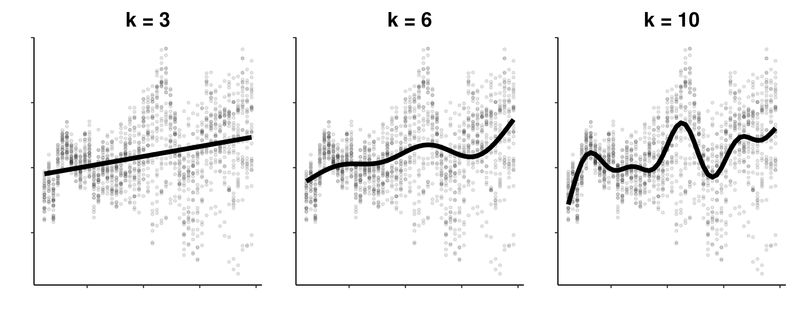

Chapter 8 GAM validation
So far, we have worked with simple (Gaussian) additive models, the non-linear equivalent to a linear model.
However, ecological datasets often do not fit the assumptions of Gaussian models. So, what can we do if the observations of the response variable do not follow a Normal distribution? Or if the variance is not constant (heteroscedasticity)?
Just like generalized linear models (GLM), we can formulate generalized additive models to deal with these issues.
Let us return to our smooth interaction model for the bioluminescence data:
smooth_interact <- gam(Sources ~ Season + s(SampleDepth, RelativeDepth),
data = isit, method = "REML")
summary(smooth_interact)$p.table## Estimate Std. Error t value Pr(>|t|)
## (Intercept) 8.077356 0.4235432 19.070912 1.475953e-66
## Season2 4.720806 0.6559436 7.196969 1.480113e-12## edf Ref.df F p-value
## s(SampleDepth,RelativeDepth) 27.12521 28.77 93.91722 0As with a GLM, it is essential to check whether the model is correctly specified, especially in regards to the distribution of the response variable. We need to verify:
- The choice of our basis dimension, \(k\).
- The distribution of the model residuals, just as we do for a GLM (see Workshop 6).
Luckily, mgcv includes helpful functions for model checking:
k.check()performs a basis dimension check.gam.check()produces residual plots (and also callsk.check()).
8.1 Selecting \(k\) basis dimensions
In Chapter 5, we discussed the role of the smoothing parameter \(\lambda\) in constrains the wiggliness of our smoothing functions. This wiggliness is further controlled by the basis dimension \(k\), which sets the number of basis functions used to create a smooth function.
Each smooth in a GAM essentially the weighted sum of many smaller functions, called basis functions. The more basis functions used to build a smooth function, the more wiggly the smooth. As you can see below, a smooth with a small \(k\) basis dimension will be less wiggly than a smooth with a high \(k\) basis dimension.

Throughout this workshop, we have been working towards improving the fit of our model, meaning we have been trying to build the best possible GAM to capture relationships in our dataset. The key to getting a good model fit is to balance the trade-off between two things:
- The smoothing parameter \(\lambda\), which penalizes wiggliness;
- The basis dimension \(k\), which allows the model to wiggle according to our data.
Have we optimized the tradeoff between smoothness ( \(\lambda\) ) and wiggliness ( \(k\) ) in our model?
8.1.1 Is our model wiggly enough?
We have not yet specified a \(k\) value in our model, but gam() sets a default \(k\) depending on the number of variables on which the smooth is built.
Is the \(k\) large enough?
## k' edf k-index p-value
## s(SampleDepth,RelativeDepth) 29 27.12521 0.9448883 0.0675The EDF are very close to k. This means the wiggliness of the model is being overly constrained by the default k, and could fit the data better with greater wiggliness. In other words, the tradeoff between smoothness and wiggliness is not balanced.
We can refit the model with a larger k:
smooth_interact_k60 <- gam(Sources ~ Season + s(SampleDepth,
RelativeDepth, k = 60), data = isit, method = "REML")Is k large enough this time?
## k' edf k-index p-value
## s(SampleDepth,RelativeDepth) 59 46.03868 1.048626 0.8975The EDF are much smaller than k, which means this model fits the data better with additional wiggliness. We can replace our previous model with this wigglier version:
8.1.2 Is our model actually Normal?
As with any Normal model, we must check some model assumptions before continuing. We can evaluate the distribution of the model residuals to verify these assumptions, just as we would do for a GLM (see Workshop 6).
We can look at the residual plots with gam.check():
##
## Method: REML Optimizer: outer newton
## full convergence after 4 iterations.
## Gradient range [-0.0005267781,0.0001620713]
## (score 2487.848 & scale 27.40287).
## Hessian positive definite, eigenvalue range [15.84516,393.7878].
## Model rank = 61 / 61
##
## Basis dimension (k) checking results. Low p-value (k-index<1) may
## indicate that k is too low, especially if edf is close to k'.
##
## k' edf k-index p-value
## s(SampleDepth,RelativeDepth) 59 46 1.05 0.87In addition to the plots, gam.check() also provides the output of k.check().
If you would like more in-depth explanations of how to interpret residual plots, we recommend consulting Workshop 4 and Workshop 6.
These residual plots highlight some problems:
- Panel 2: The variance of the error is not constant (heteroscedasticity).
- Panels 1 and 4: There are a few strong outliers in this dataset.
It seems that our response variable should not be modelled with a Normal distribution!